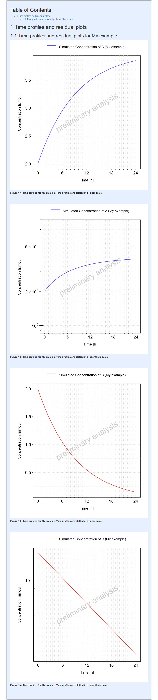

require(ospsuite.reportingengine)
#> Loading required package: ospsuite.reportingengine
#> Loading required package: ospsuite
#> Loading required package: rClr
#> Loading the dynamic library for Microsoft .NET runtime...
#> Loaded Common Language Runtime version 4.0.30319.42000
#> Loading required package: tlfThis vignette introduces the notions and objects implemented in the
OSP-Suite Reporting Engine package
(ospsuite.reportingengine).
1. Introduction
1.1. Notion of R6 objects
The ospsuite.reportingengine package aims at
facilitating the design and build of reports evaluating PBPK models
developed on PK-Sim or/and MoBi.
To this end, the package benefits from the concept of R6 classes (similar to reference classes) which allows to define structured objects whose fields can be any object such as properties, methods or even other R6 objects. R6 objects, or objects from R6 class, presents some peculiarities.
- They are usually initialized using the method
$new(...)(e.g.r6Object <- R6Class$new()). - Similarly to objects of class list, fields from R6 objects can be
called using either
$fieldNameor[[fieldName]](e.g.r6Object$method()orr6Object[[property]]). - The R6 class also integrates the concept of inheritance: an R6 object will get the attributes from its class but will also inherit properties and methods from a parent class.
1.2. Notion of workflow
The ospsuite.reportingengine package is built around 3
central R6 classes MeanModelWorkflow,
PopulationWorkflow and
QualificationWorkflow derived from the
parent R6 class Workflow. The creation of
MeanModelWorkflow or PopulationWorkflow
objects provides a structured environment with methods and properties
that facilitate the design, run and report of the evaluations of PBPK
models developed on PK-Sim or/and MoBi. For
QualificationWorkflow objects, more details are available
in a dedicated article. The
Worklow objects combine 2 features defined as R6
objects:
-
SimulationSetandPopulationSimulationSetobjects defines which and how model(s) and/or data can be used by the workflow (developed in more details in section 3). These objects need to be created before the creation of workflow objects as they are required to create the workflow. -
Taskobjects define the evaluations to be performed by the workflow. These objects are directly created and included upon creation of theWorkflowobjects (developed in more details in section 4). Their settings can be checked and updated after creation.
1.3. Nomenclature
Table 1 enumerates some of the main instances of the
ospsuite.reportingengine package usually defined by users
during the design of a workflow. The tab Reference documents available classes
and functions exported by the ospsuite.reportingengine
package. The comprehensive documentation and usage of each of these
objects is accessible in the tab Reference.
Table 1: Nomenclature of
ospsuite.reportingengine main instances
| Workflow objects | Use case |
|---|---|
| MeanModelWorkflow | Defined by user |
| PopulationWorkflow | Defined by user |
| QualificationWorkflow | Build in loadQualificationWorkflow |
| Simulation Set objects | Use case |
| SimulationSet | Defined by user |
| PopulationSimulationSet | Defined by user |
| ConfigurationPlan | Build in loadQualificationWorkflow |
| Output path and PK parameter objects | Use case |
| Output | Defined by user |
| PkParameterInfo | Defined by user |
| Workflow task objects | Use case |
| Task | Build in workflow objects |
| SimulationTask | Build in workflow objects |
| SensitivityAnalysisTask | Build in workflow objects |
| PopulationSensitivityAnalysisTask | Build in workflow objects |
| QualificationTask | Build in QualificationWorkflow objects |
| PlotTask | Build in workflow objects |
| PopulationPlotTask | Build in PopulationWorkflow objects |
| GofPlotTask | Build in workflow objects |
| Workflow task settings objects | Use case |
| PlotSettings | Build in workflow objects |
| SensitivityPlotSettings | Build in workflow objects |
1.4. General scheme
In order to define and run appropriately a Workflow object, a few steps are required:
- Load the
ospsuite.reportingenginepackage
- Load the
- Define the simulation outputs possibly with their PK parameters
Output$new()- Define the simulation sets possibly mapping simulations to observed data
SimulationSet$new()- Define the workflow and its result folder
Workflow$new()- Define the workflow tasks
workflow$activateTasks()- Run the workflow
workflow$runWorkflow()A working example of workflow script is provided below for reporting a time profile plot on Minimodel2.pkml.
Code
# Get the pkml simulation file: "MiniModel2.pkml"
simulationFile <- system.file("extdata", "MiniModel2.pkml",
package = "ospsuite.reportingengine"
)
# Create Output objects which define output paths that will be plotted by the workflow
outputA <- Output$new(
path = "Organism|A|Concentration in container",
displayName = "Concentration of A"
)
outputB <- Output$new(
path = "Organism|B|Concentration in container",
displayName = "Concentration of B"
)
# Create a SimulationSet object which defines the model and outputs to evaluate
myExampleSet <- SimulationSet$new(
simulationSetName = "My example",
simulationFile = simulationFile,
outputs = c(outputA, outputB)
)
# Create the workflow object
myExampleWorkflow <-
MeanModelWorkflow$new(
simulationSets = myExampleSet,
workflowFolder = "myExample-Results"
)
# Set the workflow tasks to be run
myExampleWorkflow$activateTasks(c("simulate", "plotTimeProfilesAndResiduals"))
# Run the workflow
myExampleWorkflow$runWorkflow()For this example, the list of files and folders generated by the workflow are:
list.files(myExampleWorkflow$workflowFolder)
#> [1] "log-debug.txt" "log-info.txt" "Report-word.md"
#> [4] "Report.docx" "Report.md" "SimulationResults"
#> [7] "TimeProfiles"The associated report will be as follows:
Report
2. Workflow
Workflow objects define which models are evaluated, how
they are evaluated and how the evaluations are reported.
In the ospsuite.reportingengine package, two types of
Workflow are available and can be created:
-
MeanModelWorkflowdedicated on evaluations specific to mean models -
PopulationWorkflowdedicated on evaluations specific to population models
2.1. MeanModelWorkflow
Workflows defined by MeanModelWorkflow objects can be
illustrated by Figure 1.
The blue frame corresponds to the inputs of the workflow. These
inputs need to be defined using SimulationSet objects. For
workflows with multiple simulations and observed datasets, a list of
SimulationSet objects can be input instead of one unique
SimulationSet object. Within a Workflow
object, the simulation sets are accessible from the
simulationStructures lists which also provides relevant
information about input/output files and folders
The black frames correspond to the tasks or evaluations performed by
the workflow. These tasks are defined using Task objects
built in every Workflow object, meaning there is no need to
input them when creating a Workflow object. Users access,
update and switch the task on/off tasks after creation of their
Workflow.
#> [1] FALSE
Figure 1: Mean model workflow inputs and tasks
2.2. PopulationWorkflow
Workflows defined by PopulationWorkflow objects can be
illustrated by Figure 2.
The blue frame corresponds to the inputs of the workflow. These
inputs need to be defined using PopulationSimulationSet
objects. For workflows with multiple simulations and observed datasets,
a list of PopulationSimulationSet objects can be input
instead of one unique PopulationSimulationSet object.
Within a Workflow object, the simulation sets are
accessible from the simulationStructures lists which also
provides relevant information about input/output files and folders
The black frames correspond to the tasks or evaluations performed by
the workflow. These tasks are defined using Task objects
built in every Workflow object, meaning there is no need to
input them when creating a Workflow object. Users access,
update and switch the task on/off tasks after creation of their
Workflow.
Some tasks of population workflows perform a direct comparison of the
simulation sets (e.g. plotDemography or
plotPKParameters). Such comparisons can be different
according to the selected population workflow types. Three population
workflow types are available in ospsuite.reportingengine
and defined in PopulationWorkflowTypes:
-
Pediatric (
workflowType = "pediatric")- All properties (physiology and PK Parameter) are plotted vs. age and weight,
- The time profiles are plotted in comparison to a reference population the sensitivity analysis is done on all populations except the reference population
-
Parallel Comparison
(
workflowType = "parallelComparison")- PK parameter are plotted parallel in Box-Whisker plots without a reference population,
- If a reference population is given, the time profiles are plotted in comparison to this population
- The sensitivity analysis is done on all populations
-
Ratio Comparison
(
workflowType = "ratioComparison")- Same as parallel comparison, but for the PK Parameter additional the ratio of the PK Parameter to the reference population is calculated and plotted in box-whisker plots
#> [1] FALSE
Figure 2: Population workflow inputs and tasks
2.3. Qualification Workflow
Another type of workflow can be defined by
QualificationWorkflow objects using a configuration plan
for qualification purposes. The article Qualification Workflow details
how to build and use such QualificationWorkflow
objects.
2.4. Creation of a Workflow
To create a MeanModelWorkflow or a
PopulationWorkflow object, the method $new()
needs to be used with at least the inputs defined below.
- For mean model workflows:
myWorkflow <- MeanModelWorkflow$new(simulationSets, workflowFolder)- For population workflows:
myWorkflow <-
PopulationWorkflow$new(workflowType, simulationSets, workflowFolder)where the input simulationSets is a list of
SimulationSet objects for a mean model workflow, and a list
of PopulationSimulationSet objects for a population
workflow.
The input workflowFolder is the name of the folder in
which the workflow outputs are saved. As illustrated in Figures 1 and 2,
some tasks use outputs obtained from previous tasks. If the directory
specified in workflowFolder contains such outputs, they
will be used by the current workflow. This latter option can be useful
for updating and running only parts of the workflow without having to
perform all the simulations every time.
The input workflowType is one of the 3 population
workflow types as defined by PopulationWorkflowTypes.
Other optional inputs can be added when creating a workflow:
-
createWordReport: logical defining if a word version (.docx) of the report should be saved besides its markdown version (.md). The default value for this option isTRUE, meaning that a report in word is also created. -
watermark: character defining the text to display in figures background. The default value isNULL, in which case the text “preliminary results” will be displayed in the figures for all computers using an non-validated environment. -
simulationSetDescriptor: character defining a descriptor of how simulation sets should be indicated in reports (e.g. “scenario”, “set”, “simulation”, or “population”). The default value for this option isNULL, meaning that there won’t be any descriptor of the simulation sets.
2.5. Workflow built in methods and properties
After creation of a Workflow object, some built in
methods and properties are available (using the character $
after the name of the object).
Most of the workflow properties correspond to the inputs used to
create the workflow and includes createWordReport,
workflowFolder, reportFilePath, the list
simulationStructures and the workflow tasks (developed in
section 4).
Additionally, the methods listed below can be used to access relevant information about the workflow:
-
printReportingEngineInfo(): prints information about the environment and packages currently used. -
getWatermark(): prints the watermark to be displayed by the workflow. -
getParameterDisplayPaths(): prints the mapping between parameters and their display paths -
getSimulationDescriptor(): prints the simulation descriptor to be used by the workflow -
getAllTasks(): prints the names of all the workflow available tasks -
getAllPlotTasks(): prints the names of all the workflow plot tasks -
getActiveTasks(): prints the names of all the workflow active tasks -
getInactiveTasks(): prints the names of all the workflow inactive tasks
To update some of the workflow properties, the methods listed below can be used:
-
setWatermark(watermark): set the watermark to be displayed by the workflow. The inputwatermarkis of type character. -
setParameterDisplayPaths(parameterDisplayPaths): set the the mapping between parameters and their display paths. The inputparameterDisplayPathsis of type data.frame and includes “parameter” and “displayPath” in its variables. External functions can also be used instead:setWorkflowParameterDisplayPaths(parameterDisplayPaths, workflow)setWorkflowParameterDisplayPathsFromFile(fileName, workflow)
-
setSimulationDescriptor(text): set the simulation descriptor of the workflow. The inputtextis of type character.
Finally, the method runWorkflow() runs the simulations
and analyses of the models, and also saves the evaluations and their
report.
3. Simulation sets
SimulationSet and PopulationSimulationSet
objects includes all the relevant information needed to report the
evaluations of a model.
Below is the syntax for creating such simulation sets, the next sub-sections will provide more details on each input:
Simulation Set
SimulationSet$new(
simulationSetName,
simulationFile,
outputs,
dataSource,
dataSelection,
applicationRanges,
timeUnit,
timeOffset,
minimumSimulationEndTime
)Population Simulation Set
PopulationSimulationSet$new(
referencePopulation,
simulationSetName,
simulationFile,
populationFile,
studyDesignFile,
plotReferenceObsData,
outputs,
dataSource,
dataSelection,
applicationRanges,
timeUnit,
timeOffset,
minimumSimulationEndTime
)3.1. Simulation file
A simulation file, simulationFile is an export of a
simulation from MoBi or PK-SIM in pkml format. Display names for the
simulation set can be provided using simulationSetName.
3.2. Population file
A population file, populationFile, is collection of
parameter paths and parameter values normally an export of a population
from PK-SIM in csv format. It is also possible to use an M&S
activity-specific population file, which has the “PK-Sim” format, but
was manipulated after the export from PK-SIM or was generated outside of
PK-Sim. The generation of the population file than must be validated.
Display names for the population can be provided using
simulationSetName.
3.2.1. Study Design file
The study design file, studyDesignFile, contains
additional information on the study design, e.g. a body weight dependent
dose in a pediatric study. A regular csv format is expected for such a
file.
The example below shows a template of such a study design content.
| Organism|Weight | Organism|Weight | Gender | Applications|IV Bolus|DrugMass |
|---|---|---|---|
| kg | kg | nmol | |
| SOURCE_MIN | SOURCE_MAX | SOURCE_EQUALS | TARGET |
| 20 | 40 | MALE | 2 |
| 20 | 40 | FEMALE | 2.5 |
| 40 | 60 | MALE | 10 |
| 40 | 60 | FEMALE | 14 |
| 60 | 20 |
3.3. Format of data files
If the workflow uses data, two files must be provided within
a DataSource object as follows:
DataSource$new(dataFile, metaDataFile, caption = NULL)The optional caption argument defines the data source
displayed caption in the report.
3.3.1. Data file
The Data file can be a blank separated text file or a csv file, column headers are used later as R variable names, and they must not contain special letters like blanks. The data is expected to follow a tidy format like Nonmem formatted datasets. All data columns used for figures and tables, must be numerical and listed in the dictionary/meta data file (details in section 3.3.2). For data filtering, these columns and additional ones can be used, the additional columns may also contain strings. But be careful that these strings do not contain the column separator blank. A column must be either numerical or of type string, they must not contain both.
3.3.2. Dictionary/meta data file
The dictionary is a csv file mapping the data file. Unlike the Matlab version of the reporting engine, a regular csv with a comma (“,”) as separator is expected.
The dictionary file must contain the following variables: ‘ID’, ‘type’, ‘datasetColumn’, ‘datasetUnit’, ‘reportName’, ‘pathID’, ‘comment’. For time profile plots, you must provide ‘time’ and ‘dv’ in ‘ID’. The variable ‘lloq’, for lower limit of quantitation, can also be provided but is not necessary. These variables need to be mapped to the variable names of the dataset using the dictionary variable ‘nonmenColumn’.
Regarding units, two options are possible:
- Providing units using only the dictionary: for ‘time’ and ‘dv’ the column ‘nonmemUnit’ should be filled with the corresponding unit (‘lloq’ is assumed with the same unit as ‘dv’).
- Providing units within the observed data:
- the dictionary must include the following new variables in ‘ID’: ‘time_unit’ and ‘dv_unit’.
- the dictionary must also include the mapping to the variable names in the dataset using ‘nonmenColumn’.
The example below shows the template of a dictionary content available on GitHub:
| ID | type | datasetColumn | datasetUnit | reportName | pathID | comment |
|---|---|---|---|---|---|---|
| sid | identifier | SID | ||||
| stud | identifier | STUD | ||||
| time | timeprofile | TIME | h | |||
| dv | timeprofile | DV | mg/ml | |||
| tad | timeprofile | TAD | h | |||
| age | covariate | AGE | year(s) | Age | Organism|Age | |
| wght | covariate | WGHT | kg | Body weight | Organism|Weight | |
| hght | covariate | HGHT | cm | Height | Organism|Height | |
| bmi | covariate | BMI | kg/m2 | BMI | Organism|BMI | |
| gender | covariate | SEX | SEX | Gender | Make sure 1=male 2= female |
3.4. Outputs
For any simulation set, Output objects define which
simulation paths, associated PK parameters and associated observed data
are evaluated. Output objects are also R6 objects created
using the method $new(). Below is the syntax for creating
such Output objects, the next sub-sections will provide
more details on each input:
Output
Output$new(
path,
displayName,
displayUnit,
dataSelection,
dataDisplayName,
pkParameters
)3.4.1. Path
The input variable path indicates the path name within a
simulation (e.g. ‘Organism|PeripheralVenousBlood|Raltegravir|Plasma
(Peripheral Venous Blood)’) that needs to be included in the
simulation run. Display name and unit for this path can be provided
using displayName and displayUnit.
3.4.2. Data selection
For tasks such as goodness of fit, observed data can be used.
Usually, the data is included into one unique Nonmem data file which
needs to be filtered and associated to the correct
path.
The input variable dataSelection provides a filter for
the Nonmem data file. It must be R readable code, using the Nonmem
headers as variable names (e.g. ‘SID>0’ or ‘AGE<12
& SEX==1’).
- By default,
dataSelection= ‘NONE’. Consequently, no data is selected and no evaluation is performed. - If you want to use all, you can include the filter
dataSelection= ‘ALL’.
3.4.3. PK parameters
The input pkParameters indicates the path
related PK parameters that the user wants to include in his analysis. A
list of pk parameter names can be directly provided to this input
(e.g. c(‘C_max’, ‘AUC_inf’)). Display names and display units
will be used as is from the PK parameter objects defined using the
ospsuite package.
In the case different display names or/and units are needed between
the same PK parameters but from different paths, it is also possible to
use PkParameterInfo instances instead of pk parameter names
directly.
PkParameterInfo$new(
pkParameter,
displayName,
displayUnit
)However, in the case the same display names and units are used, the
better practice is to define or update the PK parameters, their display
names and units beforehand with the ospsuite package, then
to provide directly the list of their names to the input
pkParameters.
- Updating PK parameters, their display names and units can be done directly with: updatePKParameter().
- Users can also create their own PK parameters using: addUserDefinedPKParameter().
3.5. Application Ranges
If the simulation set corresponds to multiple administrations, the
reported evaluations on some application ranges can be switched on/off.
The input applicationRanges corresponds to the names of
application ranges to include in the report for the simulation set. By
default, all application ranges are included into the report. The enum
ApplicationRanges provide the names of application
ranges.
ApplicationRanges
#> $total
#> [1] "total"
#>
#> $firstApplication
#> [1] "firstApplication"
#>
#> $lastApplication
#> [1] "lastApplication"This input is then translated in the SimulationSet
objects as a list of logical values defining whether the corresponding
application range is included in the report or not.
3.6. Time Offset
The input timeOffset shifts the time variable of time
profile plots by its value in timeUnit. By default this
value is 0.
This input can be useful for pediatric workflows comparing simulation sets in the same time profile plot.
In scenarios where multiple applications were defined, the time range
of first application actually becomes the first application after
timeOffset.
4. Tasks
4.1. Task names and activation
As illustrated in Figures 1 and 2, workflows perform multiple
evaluations or tasks on a list of simulation sets. Such evaluations are
defined using Task objects which are built-in properties of
Workflow objects. To know which tasks your workflow can
perform, the workflow method getAllTasks() can be used.
Usually, not all the tasks are required to run in a workflow, which
led Task objects to include the logical field
active defining if a task should be performed or not. The
workflow methods getActiveTasks() and
getInactiveTasks() provide the names of active and inactive
tasks of the workflow, respectively. To modify which tasks should be
run, the active field of any task can be updated. The
workflow methods activateTasks(taskNames) and
inactivateTasks(inactivateTasks) provide a fast and easy
way to update which tasks will be run. In particular, their default
value for the input taskNames is
getAllTasks(), meaning that using
activateTasks() without argument will activate every task
of the workflow.
Additionally, the enums StandardSimulationTasks and
StandardPlotTasks respectively provide a quick access to
standard simulation and plot tasks common to mean model and population
workflows.
# Names of standard simulation tasks
StandardSimulationTasks
#> $simulate
#> [1] "simulate"
#>
#> $calculatePKParameters
#> [1] "calculatePKParameters"
#>
#> $calculateSensitivity
#> [1] "calculateSensitivity"
# Names of standard plot tasks
StandardPlotTasks
#> $plotTimeProfilesAndResiduals
#> [1] "plotTimeProfilesAndResiduals"
#>
#> $plotPKParameters
#> [1] "plotPKParameters"
#>
#> $plotSensitivity
#> [1] "plotSensitivity"Using the example shown in section 1.4.. The task names in the mean model workflow were:
# All workflow's tasks
myExampleWorkflow$getAllTasks()
#> [1] "plotSensitivity" "plotPKParameters"
#> [3] "plotAbsorption" "plotMassBalance"
#> [5] "plotTimeProfilesAndResiduals" "calculateSensitivity"
#> [7] "calculatePKParameters" "simulate"
# Only active tasks that are run
myExampleWorkflow$getActiveTasks()
#> [1] "plotTimeProfilesAndResiduals" "simulate"
# Only inactive tasks that are not run
myExampleWorkflow$getInactiveTasks()
#> [1] "plotSensitivity" "plotPKParameters" "plotAbsorption"
#> [4] "plotMassBalance" "calculateSensitivity" "calculatePKParameters"The activation/inactivation of tasks can be done as follows:
# Inactivate all tasks
myExampleWorkflow$inactivateTasks()
myExampleWorkflow$getActiveTasks()
#> NULL
# Activate only tasks "simulate" and "plotTimeProfilesAndResiduals" tasks
myExampleWorkflow$activateTasks(c("simulate", "plotTimeProfilesAndResiduals"))
myExampleWorkflow$getActiveTasks()
#> [1] "plotTimeProfilesAndResiduals" "simulate"4.2. Required inputs to run a task
As mentioned above, some tasks can be inactivated. Because some evaluations can take a lot of time, especially sensitivity analyses, the use of simulation results as an input of subsequent tasks is essential.
Before running any task, workflows will check if the task required
input files are available. This feature can also be accessed by users
from the task method getInputs() which can be combined with
the function file.exists
# Get list of files or folders required to run task "plotTimeProfilesAndResiduals"
myExampleWorkflow$plotTimeProfilesAndResiduals$getInputs()
#> [1] "myExample-Results/SimulationResults/My example-SimulationResults.csv"4.3. Task settings
Task objects include many properties necessary to log
the evaluations, to ensure a continuity between input and output files
of different tasks and to build the final report of the workflow.
Among the Task properties, the field
settings includes the task properties that can be updated
for the evaluation, log or report of the workflow. The task
settings are R6 objects whose properties can be directly
accessed as shown below (using the character $ after
settings).
# Get value of settings property "showProgress" for the task "simulate"
myExampleWorkflow$simulate$settings$showProgress
#> [1] FALSE
# Get value of settings property "digits" for the task "plotPKParameters"
myExampleWorkflow$plotPKParameters$settings$digits
#> [1] 2
# Get the names of the "plotConfigurations" list used during the task "plotTimeProfilesAndResiduals"
names(myExampleWorkflow$plotTimeProfilesAndResiduals$settings$plotConfigurations)
#> [1] "timeProfile" "obsVsPred" "resVsPred" "resVsTime" "resHisto"
#> [6] "resQQPlot" "histogram" "qqPlot"5. Workflow outputs
Once the workflow and its settings have been defined, the workflow
method $runWorkflow() will run all the active tasks and
generate all the associated results and report. The following outputs
will be generated in workflowFolder directory: logs,
results directories and reports.
5.1. Logs
Three types of logs can be generated during the creation, design and run of a workflow:
- log-info.txt which contains information like starting time and version numbers of the used software
- log-error.txt which contains all errors and warnings that occurred during the execution
- log-debug.txt which contains information useful for debugging purpose.
5.2. Result directories
Each task will save its results in a dedicated directory. The names of the results directory are as follow:
-
SimulationResults which contains the results of
simulation runs, obtained from
simulatetask, as csv files. It is possible to load the results using theospsuitemethod importResultsFromCSV(). -
PKAnalysisResults which contains the results of PK
analysis runs, obtained from
calculatePKParameterstask, as csv files. It is possible to load the results using theospsuitemethod importPKAnalysesFromCSV(). -
SensitivityResults which contains the results of
sensitivity analysis runs, obtained from
calculateSensitivitytask, as csv files. It is possible to load the results using theospsuitemethod importSensitivityAnalysisResultsFromCSV(). -
TimeProfiles which contains the figures obtained
from
plotTimeProfilesAndResidualstask and their source values as png and csv files. -
PKAnalysis which contains the figures and tables
obtained from
plotPKParameterstask and their source values as png and csv files. -
Sensitivity which contains the figures obtained
from
plotSensitivitytask and their source values as png and csv files. -
MassBalance which contains the figures and tables
obtained from
plotMassBalancetask and their source values as png and csv files. This directory is specific of mean model workflows. -
Absorption which contains the figures and tables
obtained from
plotAbsorptiontask and their source values as png and csv files. This directory is specific of mean model workflows. -
Demography which contains the figures and tables
obtained from
plotDemographytask and their source values as png and csv files. This directory is specific of population model workflows.
Default figure format is png, but it is possible to change this default using setPlotFormat().
5.3. Reports and appendices
Each plot task will save an appendix file besides its results as a
markdown format report. These appendices are saved directly within the
workflowFolder directory results directory with the
following names:
-
appendix-time-profile.md from
plotTimeProfilesAndResidualstask. -
appendix-pk-parameters.md from
plotPKParameterstask. -
appendix-sensitivity-analysis.md from
plotSensitivitytask. -
appendix-mass-balance.md from
plotMassBalancetask. -
appendix-absorption.md from
plotAbsorptiontask. -
appendix-demography.md from
plotDemographytask.
At the end of the workflow run, all the available appendices are combined into final reports:
- Report.md which contains the markdown version of the report, including a table of content and numbering the figures and tables.
- Report-word.md which contains a markdown version of the report to be translated by pandoc for generating the word report.
- Report.docx which contains the word version of the report, including a table of content and numbering the figures and tables.
The option createWordReport is set to
TRUE as default but can be set to
FALSE to prevent the conversion of
Report-word.md into Report.docx using
pandoc .
6. Templates
For creating or tuning reports, starting from scratch could be challenging. For this reason, some templates have been created to make it easier. The table below provides a list of templates available on GitHub and their usage.
| Template | Link | Usage |
|---|---|---|
| Excel workflow input | WorkflowInput.xlsx | createWorkflowFromExcelInput |
| Word reference report | reference.docx |
wordConversionTemplate argument of
Worklfow objects |
| Qualification workflow script | qualification-workflow-template.R | Source file to create function
createQualificationReport
|
| Observed data dictionary | tpDictionary.csv |
observedMetaDataFile argument of
SimulationSet objects |
| json theme | re-theme.json | setDefaultThemeFromJson |